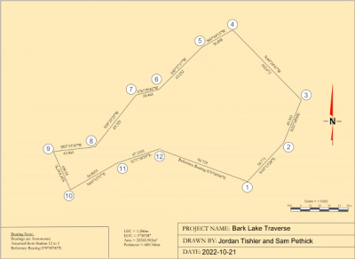
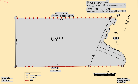
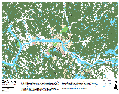
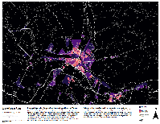

Our clients testimonies stand to the quality of the work we deliver.
Click on the maps below to see our full works
Barry B Benson
Given the tight time frame, I am beyond ecstatic from the final product I have received from this Team. I have gained more business insights from having this consultation done with Bungi Consulting. Their expertise in computer-aided design delivered an excellent visual tool to communicate my business’ purpose.
Nicki Minaj
Initially, I have planned not to reach out to consultants due to their exorbitant fees. But, with raising a family and running a fast-growing business, I did not have the time to learn the cartography skills to make various maps for my clients. After biting the bullet, I have decided to have a first free consult with Bungi Consulting – warm and friendly Team, accommodating and flexible to meet your needs – I am thoroughly impressed with the accuracy and detail of the maps I have requested.
Taylor Swift
The City of Fredericton has always been very dear to me and our organization’s operations. After conducting business with a handful of GIS specialists over the years, my business remains with Bungi Consulting for they establish fast and realistic project time frames and always exceed expectations. This land use map is still something our organization uses today.
Jack Dangermond
I can't believe they made this using ArcGIS Pro. (As a strong proponent of OSGeo, Quantum GIS is my first tool in geoinformatics and cartographic communication!)
 BUNGI CONSULTING
BUNGI CONSULTING